- ចង្អុលបង្ហាញលក្ខណៈនៃមេដ្យាន មេដ្យាទ័រ កម្ពស់ និងកន្លះបន្ទាត់ពុះមុំនៅក្នុងត្រីកោណបានច្បាស់លាស់
- ប្រើលក្ខណៈមេដ្យាន មេដ្យាទ័រ កម្ពស់ និងកន្លះបន្ទាត់ពុះមុំនៅក្នុងត្រីកោណ ដើម្បីដោះស្រាយចំណោទបានត្រឹមត្រូវ ។
1. លក្ខណៈមេដ្យាននៃត្រីកោណ
ឧទាហរណ៍ ៖ \(\displaystyle ABC\) ជាត្រីកោណមួយ ។ មេដ្យាន \(\displaystyle BB'\) និង \(\displaystyle CC'\) ប្រសព្វគ្នាត្រង់ \(\displaystyle G\) ។ បង្ហាញថា មេដ្យានដែលគូសចេញពី \(\displaystyle A\) កាត់តាម \(\displaystyle G\) ដែល \(\displaystyle GA' = \frac{1}{3}AA'\) និង \(\displaystyle AG = \frac{2}{3}AA'\) ។
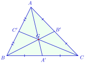
▶ មើលរូបមានចលនា៖ លក្ខណៈមេដ្យាន និងទីប្រជុំទម្ងន់
តាង \(\displaystyle D\) ជាចំណុចឆ្លុះនៃ \(\displaystyle A\) ធៀបនឹង \(\displaystyle G\)
ក្នុង \(\displaystyle \Delta ABD\) មាន
- \(\displaystyle C'\) ជាចំណុចកណ្តាលនៃ \(\displaystyle AB\)
- \(\displaystyle G\) ជាចំណុចកណ្តាលនៃ \(\displaystyle AD\)
នោះបន្ទាត់ \(\displaystyle C'G \parallel BD\) ឬបន្ទាត់ \(\displaystyle CG \parallel BD\) (1)
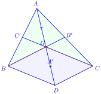
▶ មើលរូបមានចលនា៖ សម្រាយបញ្ជាក់ទីប្រជុំទម្ងន់ G
ក្នុង \(\displaystyle \Delta ACD\) មាន
- \(\displaystyle G\) ជាចំណុចកណ្តាលនៃ \(\displaystyle AD\)
- \(\displaystyle B'\) ជាចំណុចកណ្តាលនៃ \(\displaystyle AC\)
តាមទ្រឹស្តីបទចំណុចកណ្តាល គេបាន \(\displaystyle GB' \parallel CD\) ឬ \(\displaystyle GB \parallel CD\) (2)
(1) និង (2) គេបាន \(\displaystyle CG \parallel BD\) និង \(\displaystyle GB \parallel CD\) ដូច្នេះចតុកោណ \(\displaystyle BDCG\) ជាប្រលេឡូក្រាម ។
គេទាញបានអង្កត់ទ្រូង \(\displaystyle BC\) និង \(\displaystyle GD\) កាត់គ្នាត្រង់ចំណុចកណ្តាលរួម \(\displaystyle A'\) ។
ដោយបន្ទាត់ \(\displaystyle AG\) កាត់តាម \(\displaystyle A'\) ចំណុចកណ្តាលនៃអង្កត់ \(\displaystyle BC\) នោះ គេបានមេដ្យាន \(\displaystyle AA'\) កាត់តាម \(\displaystyle G\) ។ ដូច្នេះមេដ្យាន \(\displaystyle AA'\), \(\displaystyle BB'\) និង \(\displaystyle CC'\) ប្រសព្វគ្នាត្រង់ចំណុច \(\displaystyle G\) តែមួយគត់ ។
ម្យ៉ាងទៀត \(\displaystyle A'\) ជាចំណុចកណ្តាលនៃអង្កត់ទ្រូង \(\displaystyle BC\) និង \(\displaystyle GD\) របស់ប្រលេឡូក្រាម \(\displaystyle BDCG\)
ហើយ \(\displaystyle D\) ជាចំណុចឆ្លុះនៃ \(\displaystyle A\) ធៀបនឹង \(\displaystyle G\) នោះ \(\displaystyle AG = GD\) នាំឱ្យ \(\displaystyle AG = 2GA'\)
តាមសម្រាយខាងលើ គេកំណត់បានទ្រឹស្តីបទដូចខាងក្រោម៖
មេដ្យានទាំងបីនៃត្រីកោណមួយប្រសព្វគ្នាត្រង់ចំណុចមួយដែលឋិតនៅចម្ងាយ \(\displaystyle \frac{2}{3}\) នៃមេដ្យាននីមួយៗពីកំពូល ។ ចំណុចនេះហៅថា ទីប្រជុំទម្ងន់នៃត្រីកោណ ហើយកំណត់ដោយ \(\displaystyle G\) ។
ឧបមាថា ក្នុង \(\displaystyle \Delta ABC\) មេដ្យានគូសចេញពីកំពូល \(\displaystyle B\) និង \(\displaystyle C\) មានប្រវែងស្មើគ្នា ។
- ក. បង្ហាញថាទីប្រជុំទម្ងន់ \(\displaystyle G\) នៃ \(\displaystyle \Delta ABC\) ស្ថិតនៅលើមេដ្យាទ័រនៃអង្កត់ \(\displaystyle BC\) ។
- ខ. ទាញបញ្ជាក់ថា \(\displaystyle \Delta ABC\) ជាត្រីកោណសមបាតកំពូល \(\displaystyle A\) ។
មើលដំណោះស្រាយ
ក. បង្ហាញថាទីប្រជុំទម្ងន់ \(\displaystyle G\) ស្ថិតនៅលើមេដ្យាទ័រនៃអង្កត់ \(\displaystyle BC\) ៖
តាង \(\displaystyle A'\), \(\displaystyle B'\) និង \(\displaystyle C'\) ជាជើងមេដ្យានដែលគូសចេញពីកំពូល \(\displaystyle A\), \(\displaystyle B\) និង \(\displaystyle C\) នៃ \(\displaystyle \Delta ABC\) ។
ដោយ \(\displaystyle G\) ជាទីប្រជុំទម្ងន់នៃ \(\displaystyle \Delta ABC\) តាមលក្ខណៈទីប្រជុំទម្ងន់ គេបាន ៖
ដោយ \(\displaystyle BB' = CC'\) (សម្មតិកម្ម) នាំឱ្យ ៖
ចំណុចដែលនៅស្មើចម្ងាយពីចុងសងខាងនៃអង្កត់មួយ ស្ថិតនៅលើមេដ្យាទ័រនៃអង្កត់នោះ ។ ដូច្នេះ ចំណុច \(\displaystyle G\) ស្ថិតនៅលើមេដ្យាទ័រនៃអង្កត់ \(\displaystyle BC\) ។
ខ. ទាញបញ្ជាក់ថា \(\displaystyle \Delta ABC\) ជាត្រីកោណសមបាតកំពូល \(\displaystyle A\) ៖
ដោយ \(\displaystyle G\) ស្ថិតនៅលើមេដ្យាន \(\displaystyle AA'\) ហើយ \(\displaystyle A'\) ជាចំណុចកណ្ដាលនៃ \(\displaystyle BC\) នោះបន្ទាត់ \(\displaystyle GA'\) កាត់តាមចំណុចកណ្ដាល \(\displaystyle A'\) នៃ \(\displaystyle BC\) ផង និងកាត់តាម \(\displaystyle G\) ដែលនៅលើមេដ្យាទ័រផង ។ នាំឱ្យបន្ទាត់ \(\displaystyle AA'\) ជាមេដ្យាទ័រនៃអង្កត់ \(\displaystyle BC\) (\(\displaystyle AA' \perp BC\) ត្រង់ \(\displaystyle A'\)) ។
ដោយកំពូល \(\displaystyle A\) ឋិតនៅលើមេដ្យាទ័រនៃជ្រុង \(\displaystyle BC\) នោះវាស្មើចម្ងាយពី \(\displaystyle B\) និង \(\displaystyle C\) ៖
ដូចនេះ ត្រីកោណ \(\displaystyle ABC\) ជាត្រីកោណសមបាតកំពូល \(\displaystyle A\) ។
សង់ចំណុច \(\displaystyle C\) ដែលបន្ទាត់ \(\displaystyle d\) និង \(\displaystyle d'\) ជាទម្រនៃមេដ្យានពីរនៃ \(\displaystyle \Delta ABC\) ។
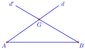
▶ មើលរបៀបគូសរូបនេះ៖ សង់កំពូល *C*
មើលដំណោះស្រាយ
របៀបសង់ចំណុច \(\displaystyle C\) ៖
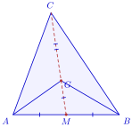
- ចំណុចប្រសព្វរវាងបន្ទាត់ទម្រមេដ្យានទាំងពីរ \(\displaystyle d\) និង \(\displaystyle d'\) គឺជាទីប្រជុំទម្ងន់ \(\displaystyle G\) នៃត្រីកោណ \(\displaystyle ABC\) ។
- ប្រើដែកឈាននិងបន្ទាត់ ដើម្បីកំណត់ចំណុចកណ្ដាល \(\displaystyle M\) នៃអង្កត់បាត \(\displaystyle AB\) (\(\displaystyle AM = MB\)) ។
- គូសកន្លះបន្ទាត់ \(\displaystyle MG\) កាត់តាម \(\displaystyle M\) និង \(\displaystyle G\) (មេដ្យានទីបីត្រូវតែឋិតនៅលើបន្ទាត់នេះ) ។
- តាមលក្ខណៈនៃទីប្រជុំទម្ងន់ ចម្ងាយពីកំពូល \(\displaystyle C\) ទៅទីប្រជុំទម្ងន់ \(\displaystyle G\) ស្មើពីរដងនៃចម្ងាយពី \(\displaystyle G\) ទៅចំណុចកណ្ដាល \(\displaystyle M\) គឺ \(\displaystyle GC = 2GM\) ។ ដូច្នេះ នៅលើកន្លះបន្ទាត់ \(\displaystyle MG\) បន្តពី \(\displaystyle G\) គេវាស់ដៅចំណុច \(\displaystyle C\) ឱ្យបាន \(\displaystyle GC = 2GM\) ។
- គូសភ្ជាប់អង្កត់ \(\displaystyle CA\) និង \(\displaystyle CB\) គេបានត្រីកោណ \(\displaystyle ABC\) ដែលត្រូវសង់ ។
2. លក្ខណៈមេដ្យាទ័រនៃត្រីកោណ
ឧទាហរណ៍ ៖ មេដ្យាទ័រនៃជ្រុង \(\displaystyle AB\) និង \(\displaystyle BC\) ក្នុង \(\displaystyle \Delta ABC\) ប្រសព្វគ្នាត្រង់ \(\displaystyle O\) ។ ស្រាយបញ្ជាក់ថា មេដ្យាទ័រនៃជ្រុង \(\displaystyle AC\) កាត់តាម \(\displaystyle O\) ។
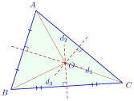
▶ មើលរូបមានចលនា៖ រង្វង់ចារឹកក្រៅត្រីកោណ
បើ \(\displaystyle O\) ជាប្រសព្វរវាងមេដ្យាទ័រ \(\displaystyle d_1\) និង \(\displaystyle d_2\) នៃជ្រុង \(\displaystyle AB\) និង \(\displaystyle BC\) រៀងគ្នា ក្នុង \(\displaystyle \Delta ABC\) គេបាន \(\displaystyle OA = OB\) និង \(\displaystyle OB = OC\)
គេទាញបាន \(\displaystyle O\) ស្ថិតនៅលើមេដ្យាទ័រ \(\displaystyle d_3\) នៃជ្រុង \(\displaystyle AC\) ។ ដូច្នេះមេដ្យាទ័រទាំងបី \(\displaystyle d_1\), \(\displaystyle d_2\) និង \(\displaystyle d_3\) នៃជ្រុង \(\displaystyle AB\), \(\displaystyle BC\) និង \(\displaystyle AC\) ក្នុង \(\displaystyle \Delta ABC\) ប្រសព្វគ្នាត្រង់ចំណុច \(\displaystyle O\) តែមួយគត់ ។
ដោយ \(\displaystyle OA = OB = OC\) នោះ \(\displaystyle O\) មានចម្ងាយស្មើទៅនិងកំពូលទាំងបីនៃ \(\displaystyle \Delta ABC\) ។ ចំណុច \(\displaystyle O\) នេះជាផ្ចិតរង្វង់ដែលកាត់តាមកំពូលទាំងបីនៃ \(\displaystyle \Delta ABC\) ។ រង្វង់នេះហៅថា រង្វង់ចារឹកក្រៅ \(\displaystyle \Delta ABC\) ។ តាមអំណះអំណាងនេះ គេទាញបានទ្រឹស្តីបទដូចខាងក្រោម៖
មេដ្យាទ័រទាំងបីនៃត្រីកោណមួយប្រសព្វគ្នាត្រង់ចំណុចតែមួយដែលឋិតនៅចម្ងាយស្មើពីកំពូលទាំងបីនៃត្រីកោណនោះ ។ ចំណុចនេះជាផ្ចិតរង្វង់ចារឹកក្រៅត្រីកោណ ។
\(\displaystyle AMB\) ជាត្រីកោណកែងត្រង់ \(\displaystyle M\) ។ \(\displaystyle O\) ជាចំណុចកណ្តាលនៃអង្កត់ \(\displaystyle AB\) ។ តាម \(\displaystyle O\) គេគូសបន្ទាត់មួយកែងនិងបន្ទាត់ \(\displaystyle AM\) ត្រង់ \(\displaystyle N\) ។ បង្ហាញថាបន្ទាត់ \(\displaystyle ON\) ជាមេដ្យាទ័រនៃអង្កត់ \(\displaystyle AM\) ។
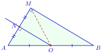
មើលដំណោះស្រាយ
សម្រាយបញ្ជាក់ ៖
ក្នុង \(\displaystyle \Delta\)កែង \(\displaystyle AMB\) មាន \(\displaystyle O\) ជាចំណុចកណ្តាលនៃអ៊ីប៉ូតេនុស \(\displaystyle AB\) នោះ គេបាន \(\displaystyle OM\) ជាមេដ្យានគូសចេញពីកំពូលមុំកែង \(\displaystyle M\) នាំឱ្យ ៖
ដោយ \(\displaystyle OA = OM\) នាំឱ្យចំណុច \(\displaystyle O\) ឋិតនៅលើមេដ្យាទ័រនៃអង្កត់ \(\displaystyle AM\) ។
ក្នុងត្រីកោណកែងទាំងពីរ \(\displaystyle ANO\) និង \(\displaystyle MNO\) មាន ៖
- អ៊ីប៉ូតេនុស \(\displaystyle OA = OM\) (សម្រាយខាងលើ)
- ជ្រុងមុំកែង \(\displaystyle ON\) ជាជ្រុងរួម
ដូច្នេះ \(\displaystyle \Delta ANO \cong \Delta MNO\) (តាមលក្ខខណ្ឌ អ.ជ) ។
វិបាក ៖ \(\displaystyle NA = NM\) នាំឱ្យ \(\displaystyle N\) ជាចំណុចកណ្តាលនៃអង្កត់ \(\displaystyle AM\) ។
ដោយ \(\displaystyle ON \perp AM\) ត្រង់ \(\displaystyle N\) ហើយ \(\displaystyle N\) ជាចំណុចកណ្តាលនៃ \(\displaystyle AM\) ដូចនេះបន្ទាត់ \(\displaystyle ON\) ជាមេដ្យាទ័រនៃអង្កត់ \(\displaystyle AM\) ។
\(\displaystyle ABC\) ជាត្រីកោណមួយ ។ បន្ទាត់ \(\displaystyle \Delta\), \(\displaystyle \Delta'\) និង \(\displaystyle \Delta''\) ជាបន្ទាត់បីដែលកាត់រៀងគ្នាតាម \(\displaystyle A\), \(\displaystyle B\) និង \(\displaystyle C\) ហើយស្របជ្រុងឈមនឹងកំពូលនីមួយៗ ។ \(\displaystyle \Delta\) និង \(\displaystyle \Delta'\) កាត់គ្នាត្រង់ \(\displaystyle C'\), \(\displaystyle \Delta\) និង \(\displaystyle \Delta''\) កាត់គ្នាត្រង់ \(\displaystyle B'\) ហើយ \(\displaystyle \Delta'\) និង \(\displaystyle \Delta''\) កាត់គ្នាត្រង់ \(\displaystyle A'\) ។ \(\displaystyle H\) ជាជើងកម្ពស់នៃ \(\displaystyle \Delta ABC\) គូសចេញពី \(\displaystyle A\) ។ ស្រាយបញ្ជាក់ថាបន្ទាត់ \(\displaystyle AH\) ជាមេដ្យាទ័រនៃអង្កត់ \(\displaystyle B'C'\) ។
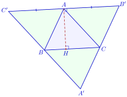
▶ មើលរបៀបគូសរូបនេះ៖ ត្រីកោណ *A′B′C′* និងកម្ពស់
មើលដំណោះស្រាយ
ស្រាយបញ្ជាក់ថាបន្ទាត់ \(\displaystyle AH\) ជាមេដ្យាទ័រនៃអង្កត់ \(\displaystyle B'C'\) ៖
ពិនិត្យចតុកោណ \(\displaystyle ACBC'\) ៖
- \(\displaystyle AC' \parallel BC\) (ព្រោះ \(\displaystyle B', A, C'\) ឋិតនៅលើបន្ទាត់ \(\displaystyle \Delta \parallel BC\))
- \(\displaystyle BC' \parallel AC\) (ព្រោះ \(\displaystyle A', B, C'\) ឋិតនៅលើបន្ទាត់ \(\displaystyle \Delta' \parallel AC\))
នាំឱ្យចតុកោណ \(\displaystyle ACBC'\) ជាប្រលេឡូក្រាម \(\displaystyle \implies AC' = BC\) ។
ពិនិត្យចតុកោណ \(\displaystyle ABCB'\) ៖
- \(\displaystyle AB' \parallel BC\) (\(\displaystyle \Delta \parallel BC\))
- \(\displaystyle CB' \parallel AB\) (\(\displaystyle \Delta'' \parallel AB\))
នាំឱ្យចតុកោណ \(\displaystyle ABCB'\) ជាប្រលេឡូក្រាម \(\displaystyle \implies AB' = BC\) ។
គេទាញបាន ៖
នាំឱ្យ \(\displaystyle A\) ជាចំណុចកណ្តាលនៃអង្កត់ \(\displaystyle B'C'\) ។
ម្យ៉ាងទៀត ដោយ \(\displaystyle AH\) ជាកម្ពស់នៃ \(\displaystyle \Delta ABC\) គូសចេញពី \(\displaystyle A\) នោះ \(\displaystyle AH \perp BC\) ។
ដោយបន្ទាត់ \(\displaystyle B'C'\) ស្របនឹង \(\displaystyle BC\) ហើយ \(\displaystyle AH \perp BC\) នាំឱ្យ ៖
បន្ទាត់ \(\displaystyle AH\) កែងនឹងអង្កត់ \(\displaystyle B'C'\) ត្រង់ចំណុចកណ្តាល \(\displaystyle A\) របស់វា ដូចនេះ បន្ទាត់ \(\displaystyle AH\) ជាមេដ្យាទ័រនៃអង្កត់ \(\displaystyle B'C'\) ។
3. លក្ខណៈកម្ពស់នៃត្រីកោណ
ឧទាហរណ៍ ៖ \(\displaystyle PQR\) ជាត្រីកោណមួយដែល \(\displaystyle A\), \(\displaystyle B\) និង \(\displaystyle C\) ជាចំណុចកណ្តាលនៃជ្រុងនីមួយៗ (ដូចរូប) ។ បង្ហាញថាកម្ពស់ទាំងបីនៃ \(\displaystyle \Delta ABC\) ប្រសព្វគ្នាត្រង់ចំណុចមួយ ។
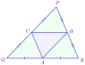
▶ មើលរូបមានចលនា៖ ត្រីកោណធំ A′B′C′ (កម្ពស់ជាមេដ្យាទ័រ)
តាង \(\displaystyle A'\), \(\displaystyle B'\) និង \(\displaystyle C'\) ជាជើងកម្ពស់គូសចេញពីកំពូល \(\displaystyle A\), \(\displaystyle B\) និង \(\displaystyle C\) រៀងគ្នានៃ \(\displaystyle \Delta ABC\) ។
\(\displaystyle B\) ជាចំណុចកណ្តាលនៃជ្រុង \(\displaystyle PR\) និង \(\displaystyle C\) ជាចំណុចកណ្តាលនៃជ្រុង \(\displaystyle PQ\) តាមទ្រឹស្ដីបទចំណុចកណ្ដាល គេបានបន្ទាត់ \(\displaystyle BC \parallel RQ\) ។
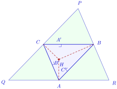
▶ មើលរូបមានចលនា៖ ត្រីកោណធំ A′B′C′ (កម្ពស់ជាមេដ្យាទ័រ)
ម្យ៉ាងទៀត \(\displaystyle AA' \perp BC\) និង \(\displaystyle BC \parallel RQ\) គេបាន \(\displaystyle AA' \perp QR\) ត្រង់ \(\displaystyle A\) ។ ដោយ \(\displaystyle A\) ជាចំណុចកណ្តាលនៃជ្រុង \(\displaystyle RQ\) គេទាញបានបន្ទាត់ \(\displaystyle AA'\) ជាមេដ្យាទ័រនៃអង្កត់ \(\displaystyle RQ\) ។
ស្រាយបញ្ជាក់ដូចគ្នាខាងលើ គេនឹងបានបន្ទាត់ \(\displaystyle BB'\) និង \(\displaystyle CC'\) ជាមេដ្យាទ័រនៃអង្កត់ \(\displaystyle PR\) និង \(\displaystyle PQ\) ។ ដោយមេដ្យាទ័រនៃ \(\displaystyle \Delta PQR\) ប្រសព្វគ្នាត្រង់ចំណុចតែមួយដែលតាងដោយ \(\displaystyle H\) ។
ម្យ៉ាងទៀតកម្ពស់ \(\displaystyle AA'\), \(\displaystyle BB'\) និង \(\displaystyle CC'\) នៃ \(\displaystyle \Delta ABC\) ត្រូវគ្នានឹងមេដ្យាទ័រទាំងបីនៃ \(\displaystyle \Delta PQR\) នោះគេអាចសន្និដ្ឋានបានថាកម្ពស់ \(\displaystyle AA'\), \(\displaystyle BB'\) និង \(\displaystyle CC'\) នៃ \(\displaystyle \Delta ABC\) ប្រសព្វគ្នាត្រង់ចំណុច \(\displaystyle H\) នោះដែរ ។
តាមការស្រាយបញ្ជាក់ខាងលើ គេកំណត់បានទ្រឹស្តីបទដូចខាងក្រោម៖
- កម្ពស់ទាំងបីនៃត្រីកោណមួយប្រសព្វគ្នាត្រង់ចំណុចតែមួយ ។ ចំណុចប្រសព្វនោះ ហៅថា អរតូសង់នៃត្រីកោណ ។
- កម្ពស់ទាំងបីនៃ \(\displaystyle \Delta ABC\) ប្រសព្វគ្នាត្រង់ \(\displaystyle H\) ។ ចំណុច \(\displaystyle H\) ហៅថាអរតូសង់នៃ \(\displaystyle \Delta ABC\) ។
- ចំណុចមួយនៅលើកម្ពស់ពីរនៃត្រីកោណមួយជាអរតូសង់នៃត្រីកោណនោះ វាក៏ឋិតនៅកម្ពស់ទី 3 ដែរ ។
- ក្នុងត្រីកោណសម័ង្ស កម្ពស់ក៏ជាមេដ្យាននិងមេដ្យាទ័រ នោះផ្ចិតរង្វង់ចារឹកក្រៅ ទីប្រជុំទម្ងន់និងអរតូសង់គឺត្រួតស៊ីគ្នា ។
ក្នុងរូបខាងស្តាំនេះ \(\displaystyle ABC\) និង \(\displaystyle A'BC\) ជាត្រីកោណកែងពីរមានអ៊ីប៉ូតេនុស \(\displaystyle BC\) ដូចគ្នា ។ \(\displaystyle I\) ជាចំណុចប្រសព្វនៃបន្ទាត់ \(\displaystyle AC\) និងបន្ទាត់ \(\displaystyle A'B\) បន្ទាត់កែងនឹងបន្ទាត់ \(\displaystyle BC\) កាត់តាម \(\displaystyle I\) ជួបបន្ទាត់ \(\displaystyle AB\) ត្រង់ \(\displaystyle J\) ។ បង្ហាញថាចំណុច \(\displaystyle C\), \(\displaystyle A'\) និង \(\displaystyle J\) រត់ត្រង់ជួរគ្នា ។
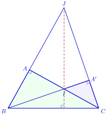
មើលដំណោះស្រាយ
សម្រាយបញ្ជាក់ ៖
ក្នុង \(\displaystyle \Delta BCJ\) មាន \(\displaystyle AC \perp BJ\) ត្រង់ \(\displaystyle A\) នោះអង្កត់ \(\displaystyle CA\) ជាកម្ពស់គូសចេញពីកំពូល \(\displaystyle C\) នៃ \(\displaystyle \Delta BCJ\) ។
បន្ទាត់ \(\displaystyle JI\) កែងនឹងបន្ទាត់ \(\displaystyle BC\) នោះបន្ទាត់ \(\displaystyle JI\) ជាកម្ពស់គូសចេញពីកំពូល \(\displaystyle J\) នៃ \(\displaystyle \Delta BCJ\) ។
ដោយ \(\displaystyle I\) ជាចំណុចប្រសព្វរវាងកម្ពស់ \(\displaystyle AC\) និង \(\displaystyle JI\) នាំឱ្យចំណុច \(\displaystyle I\) ជាអរតូសង់នៃ \(\displaystyle \Delta BCJ\) ។
ម្យ៉ាងទៀត ដោយ \(\displaystyle \Delta A'BC\) ជាត្រីកោណកែងត្រង់ \(\displaystyle A'\) នោះបន្ទាត់ \(\displaystyle A'B \perp A'C\) ត្រង់ \(\displaystyle A'\) ។ ដោយបន្ទាត់ \(\displaystyle A'B\) កាត់តាមអរតូសង់ \(\displaystyle I\) នោះបន្ទាត់ដែលគូសចេញពីកំពូល \(\displaystyle B\) កាត់តាម \(\displaystyle I\) ត្រូវតែកែងនឹងជ្រុងឈម \(\displaystyle CJ\) ត្រង់ចំណុច \(\displaystyle A'\) ។
នេះបញ្ជាក់ថា ចំណុច \(\displaystyle A'\) ឋិតនៅលើជ្រុង \(\displaystyle CJ\) ។ ដូចនេះ ចំណុច \(\displaystyle C\), \(\displaystyle A'\) និង \(\displaystyle J\) រត់ត្រង់ជួរគ្នា ។
គេឱ្យប្រលេឡូក្រាម \(\displaystyle ABCD\) មួយ ។
- \(\displaystyle O\) ជាចំណុចប្រសព្វរវាងអង្កត់ទ្រូងរបស់វា
- \(\displaystyle H\) ជាអរតូសង់នៃត្រីកោណ \(\displaystyle ABC\)
- \(\displaystyle H'\) ជាអរតូសង់នៃត្រីកោណ \(\displaystyle ACD\) ។
ស្រាយបញ្ជាក់ថា \(\displaystyle O\) ជាចំណុចកណ្តាលនៃអង្កត់ \(\displaystyle HH'\) ។
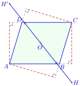
មើលដំណោះស្រាយ
ស្រាយបញ្ជាក់ថា \(\displaystyle O\) ជាចំណុចកណ្តាលនៃអង្កត់ \(\displaystyle HH'\) ៖
ក្នុងប្រលេឡូក្រាម \(\displaystyle ABCD\) ចំណុច \(\displaystyle O\) ជាចំណុចកណ្តាលនៃអង្កត់ទ្រូង \(\displaystyle AC\) និង \(\displaystyle BD\) ។ ដូច្នេះ \(\displaystyle O\) ជាផ្ចិតឆ្លុះនៃប្រលេឡូក្រាម \(\displaystyle ABCD\) ។
ពិនិត្យបំប្លែងឆ្លុះធៀបនឹងផ្ចិត \(\displaystyle O\) ៖
- ចំណុច \(\displaystyle A\) ឆ្លុះទៅចំណុច \(\displaystyle C\) (\(\displaystyle O\) ជាចំណុចកណ្ដាលនៃ \(\displaystyle AC\))
- ចំណុច \(\displaystyle B\) ឆ្លុះទៅចំណុច \(\displaystyle D\) (\(\displaystyle O\) ជាចំណុចកណ្ដាលនៃ \(\displaystyle BD\))
- ចំណុច \(\displaystyle C\) ឆ្លុះទៅចំណុច \(\displaystyle A\)
ដូច្នេះ បំណ្លែងឆ្លុះធៀបនឹង \(\displaystyle O\) បំប្លែងត្រីកោណ \(\displaystyle ABC\) ទៅជាត្រីកោណ \(\displaystyle CDA\) (ដែលជាត្រីកោណ \(\displaystyle ACD\)) ។
ដោយ \(\displaystyle H\) ជាអរតូសង់នៃ \(\displaystyle \Delta ABC\) ហើយ \(\displaystyle H'\) ជាអរតូសង់នៃ \(\displaystyle \Delta ACD\) នោះចំណុច \(\displaystyle H'\) ជារូបភាពឆ្លុះនៃ \(\displaystyle H\) ធៀបនឹងផ្ចិតឆ្លុះ \(\displaystyle O\) ។
តាមនិយមន័យនៃផ្ចិតឆ្លុះ ផ្ចិត \(\displaystyle O\) គឺជាចំណុចកណ្តាលនៃអង្កត់ដែលភ្ជាប់ចំណុចមួយនិងរូបភាពឆ្លុះរបស់វា ។
ដូចនេះ \(\displaystyle O\) ជាចំណុចកណ្តាលនៃអង្កត់ \(\displaystyle HH'\) ។
4. លក្ខណៈកន្លះបន្ទាត់ពុះមុំនៃត្រីកោណ
4.1. កន្លះបន្ទាត់ពុះក្នុង
ឧទាហរណ៍ ៖ រូបដែលឱ្យខាងស្តាំនេះ ។
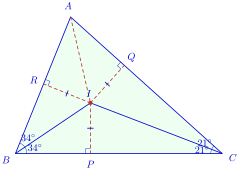
▶ មើលរូបមានចលនា៖ រង្វង់ចារឹកក្នុងត្រីកោណ
- ក. តើកន្លះបន្ទាត់ \(\displaystyle BI\) និងកន្លះបន្ទាត់ \(\displaystyle CI\) ជាអ្វីក្នុង \(\displaystyle \Delta ABC\) ?
- ខ. បង្ហាញថា \(\displaystyle I\) ឋិតនៅលើកន្លះបន្ទាត់ពុះមុំក្នុងទាំងបីនៃ \(\displaystyle \Delta ABC\) ។
សម្រាយបញ្ជាក់ ៖
ក. តាមរូប គេឃើញថា \(\displaystyle \angle ABI = \angle CBI = 34^\circ\) និង \(\displaystyle \angle BCI = \angle ACI = 21^\circ\) គេអាចសន្និដ្ឋានបានថាកន្លះបន្ទាត់ \(\displaystyle BI\) និង \(\displaystyle CI\) ជាកន្លះបន្ទាត់ពុះនៃ \(\displaystyle \angle B\) និង \(\displaystyle \angle C\) ក្នុង \(\displaystyle \Delta ABC\) ។
ខ. ដោយ \(\displaystyle I\) ជាចំណុចប្រសព្វរវាងកន្លះបន្ទាត់ពុះនៃ \(\displaystyle \angle B\) និង \(\displaystyle \angle C\) ក្នុង \(\displaystyle \Delta ABC\)
- \(\displaystyle I\) នៅស្មើចម្ងាយពីបន្ទាត់ \(\displaystyle BC\) និង \(\displaystyle BA\) នោះ \(\displaystyle IR = IP\)
- \(\displaystyle I\) នៅស្មើចម្ងាយពីបន្ទាត់ \(\displaystyle CA\) និង \(\displaystyle CB\) នោះ \(\displaystyle IP = IQ\)
គេទាញបាន \(\displaystyle IR = IQ\), \(\displaystyle I\) នៅស្មើចម្ងាយពីបន្ទាត់ \(\displaystyle AB\) និង \(\displaystyle AC\) ។ ដូច្នេះ \(\displaystyle I\) ឋិតនៅលើកន្លះបន្ទាត់ពុះនៃមុំដែលផ្តុំឡើងដោយបន្ទាត់ \(\displaystyle AB\) និង \(\displaystyle AC\) ។
ដោយ \(\displaystyle I\) ឋិតនៅខាងក្នុងនៃត្រីកោណនោះវាឋិតនៅលើកន្លះបន្ទាត់ពុះនៃ \(\displaystyle \angle A\) ក្នុង \(\displaystyle \Delta ABC\) ។ ដូច្នេះកន្លះបន្ទាត់ពុះមុំទាំងបីនៃ \(\displaystyle \Delta ABC\) ប្រសព្វគ្នាត្រង់ចំណុច \(\displaystyle I\) ។
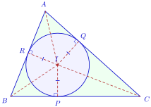
▶ មើលរូបមានចលនា៖ រង្វង់ចារឹកក្នុងត្រីកោណ
សមភាព \(\displaystyle IP = IQ = IR\) នោះចំណុច \(\displaystyle P\), \(\displaystyle Q\) និង \(\displaystyle R\) ឋិតនៅលើរង្វង់តែមួយដែលមានផ្ចិត \(\displaystyle I\) និងជ្រុងរបស់ត្រីកោណជាបន្ទាត់ប៉ះទៅនឹងរង្វង់នេះ ។ រង្វង់នេះហៅថារង្វង់ចារឹកក្នុង \(\displaystyle \Delta ABC\) ។
កន្លះបន្ទាត់ពុះមុំក្នុងទាំងបីនៃត្រីកោណមួយប្រសព្វគ្នាត្រង់ចំណុចតែមួយដែលឋិតនៅស្មើចម្ងាយពីជ្រុងទាំងបីនៃត្រីកោណនោះ ។ ចំណុចនេះជាផ្ចិតរង្វង់ចារឹកក្នុងត្រីកោណ ។
4.2. កន្លះបន្ទាត់ពុះក្រៅនិងកន្លះបន្ទាត់ពុះក្នុង
ឧទាហរណ៍ ៖ បន្ទាត់ \(\displaystyle Ax\), \(\displaystyle By\) និង \(\displaystyle Cz\) ជាបន្ទាត់ពុះមុំក្រៅនៃ \(\displaystyle \angle A\), \(\displaystyle \angle B\) និង \(\displaystyle \angle C\) រៀងគ្នានៃ \(\displaystyle \Delta ABC\) ហើយបន្ទាត់ពុះមុំក្រៅទាំងបីនេះប្រសព្វគ្នាត្រង់ \(\displaystyle J\), \(\displaystyle K\) និង \(\displaystyle L\) ដូចរូបដែលឱ្យខាងស្តាំ ។ ស្រាយបញ្ជាក់ថា \(\displaystyle J\), \(\displaystyle K\) និង \(\displaystyle L\) ឋិតនៅលើកន្លះបន្ទាត់ពុះក្នុងនៃ \(\displaystyle \angle A\), \(\displaystyle \angle B\) និង \(\displaystyle \angle C\) រៀងគ្នានៃ \(\displaystyle \Delta ABC\) ។
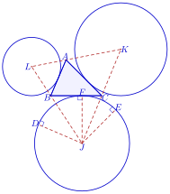
▶ មើលរបៀបគូសរូបនេះ៖ កន្លះបន្ទាត់ពុះក្រៅ និងរង្វង់ចារឹកក្នុងមុំក្រៅ
សម្រាយបញ្ជាក់ ៖
តាង \(\displaystyle D\), \(\displaystyle E\) និង \(\displaystyle F\) ជាចំណោលកែងនៃ \(\displaystyle J\) លើបន្ទាត់ \(\displaystyle AB\), \(\displaystyle AC\) និង \(\displaystyle BC\) រៀងគ្នា ។ ដោយ \(\displaystyle J\) ឋិតនៅលើកន្លះបន្ទាត់ពុះក្រៅនៃ \(\displaystyle \angle B\) និង \(\displaystyle \angle C\) នៃ \(\displaystyle \Delta ABC\) គេបាន ៖
នាំឱ្យ \(\displaystyle JD = JE\) នាំឱ្យ \(\displaystyle J\) ឋិតនៅលើកន្លះបន្ទាត់ពុះក្នុងនៃ \(\displaystyle \angle A\) ក្នុង \(\displaystyle \Delta ABC\) ។
ស្រាយបញ្ជាក់ដូចគ្នាខាងលើ គេទាញបាន \(\displaystyle K\) និង \(\displaystyle L\) ឋិតនៅលើកន្លះបន្ទាត់ពុះក្នុងនៃ \(\displaystyle \angle B\) និង \(\displaystyle \angle C\) រៀងគ្នានៃ \(\displaystyle \Delta ABC\) ។ ដោយ \(\displaystyle JD = JE = JF\) នោះចំណុច \(\displaystyle D\), \(\displaystyle E\) និង \(\displaystyle F\) ឋិតនៅលើរង្វង់ដែលមានផ្ចិត \(\displaystyle J\) ។ រង្វង់នេះហៅថា រង្វង់ចារឹកក្នុងមុំ \(\displaystyle A\) ក្រៅ \(\displaystyle \Delta ABC\) ។
កន្លះបន្ទាត់ពុះក្រៅនៃមុំពីររបស់ត្រីកោណមួយនិងកន្លះបន្ទាត់ពុះក្នុងនៃមុំទី 3 ប្រសព្វគ្នាត្រង់ចំណុចតែមួយគត់ដែលឋិតនៅស្មើចម្ងាយពីជ្រុងទាំងបីនៃត្រីកោណនោះ ។ ចំណុចប្រសព្វនេះហៅថាផ្ចិតរង្វង់ចារឹកក្នុងមុំក្រៅត្រីកោណ ។
\(\displaystyle ABC\) ជាត្រីកោណសមបាតកំពូល \(\displaystyle A\), \(\displaystyle I\) ជាផ្ចិតនៃរង្វង់ចារឹកក្នុងត្រីកោណនេះ និង \(\displaystyle \angle BIC = 120^\circ\) ។ ស្រាយបញ្ជាក់ថា \(\displaystyle ABC\) ជាត្រីកោណសម័ង្ស ។
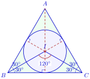
មើលដំណោះស្រាយ
សម្រាយបញ្ជាក់ ៖
\(\displaystyle I\) ជាផ្ចិតរង្វង់ចារឹកក្នុង \(\displaystyle \Delta ABC\) នោះ \(\displaystyle I\) ជាចំណុចប្រសព្វនៃកន្លះបន្ទាត់ពុះមុំក្នុងទាំងបីនៃ \(\displaystyle \Delta ABC\) ។
គេបាន ៖
ព្រោះ \(\displaystyle \angle B = \angle C\) (មុំបាតត្រីកោណសមបាត \(\displaystyle ABC\)) ។
ដោយ \(\displaystyle ABC\) ជាត្រីកោណសមបាតកំពូល \(\displaystyle A\) នាំឱ្យបន្ទាត់ \(\displaystyle AI\) ជាមេដ្យាទ័រនៃអង្កត់ \(\displaystyle BC\) ។ គេបាន \(\displaystyle IB = IC\) នាំឱ្យ \(\displaystyle \Delta IBC\) ជាត្រីកោណសមបាតកំពូល \(\displaystyle I\) ។
ប៉ុន្តែ \(\displaystyle \angle BIC = 120^\circ\) គេបាន \(\displaystyle \angle IBC + \angle BCI = 180^\circ - 120^\circ = 60^\circ\) ។
ដោយ \(\displaystyle \angle IBC = \angle BCI\) នាំឱ្យ ៖
គេទាញបាន ៖
ត្រីកោណសមបាត \(\displaystyle ABC\) មានមុំបាត \(\displaystyle \angle B = \angle C = 60^\circ\) នោះមុំកំពូល \(\displaystyle \angle A = 180^\circ - (60^\circ + 60^\circ) = 60^\circ\) ។
ដូចនេះ \(\displaystyle \Delta ABC\) ជាត្រីកោណសម័ង្ស ។
\(\displaystyle ABC\) ជាត្រីកោណកែងត្រង់កំពូល \(\displaystyle A\) និង \(\displaystyle I\) ជាផ្ចិតរង្វង់ចារឹកក្នុងនៃត្រីកោណនេះ ។ គណនា \(\displaystyle \angle BIC\) គិតជាដឺក្រេ ។
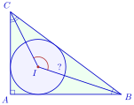
មើលដំណោះស្រាយ
គណនារង្វាស់មុំ \(\displaystyle \angle BIC\) ៖
ក្នុងត្រីកោណកែង \(\displaystyle ABC\) កែងត្រង់កំពូល \(\displaystyle A\) គេមាន \(\displaystyle \angle A = 90^\circ\) នាំឱ្យផលបូកមុំស្រួចទាំងពីរគឺ ៖
ដោយ \(\displaystyle I\) ជាផ្ចិតរង្វង់ចារឹកក្នុង \(\displaystyle \Delta ABC\) នោះកន្លះបន្ទាត់ \(\displaystyle BI\) និង \(\displaystyle CI\) ជាកន្លះបន្ទាត់ពុះនៃមុំ \(\displaystyle B\) និង \(\displaystyle C\) ៖
ក្នុងត្រីកោណ \(\displaystyle IBC\) ផលបូកមុំក្នុងគឺ ៖
ជំនួស \(\displaystyle \angle B + \angle C = 90^\circ\) គេបាន ៖
ដូចនេះ រង្វាស់នៃមុំ \(\displaystyle \angle BIC\) គឺ \(\displaystyle \angle BIC = 135^\circ\) ។
លំហាត់
ត្រីកោណ \(\displaystyle ABC\) ជាត្រីកោណសមបាតកំពូល \(\displaystyle A\) ។ កម្ពស់គូសចេញពី \(\displaystyle A\) និងមេដ្យានគូសចេញពី \(\displaystyle B\) កាត់គ្នាត្រង់ \(\displaystyle P\) ។ ស្រាយបញ្ជាក់ថា បន្ទាត់ \(\displaystyle CP\) កាត់អង្កត់ \(\displaystyle AB\) ត្រង់ចំណុចកណ្តាល ។
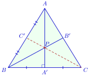
មើលដំណោះស្រាយ
ក្នុងត្រីកោណសមបាត \(\displaystyle ABC\) កំពូល \(\displaystyle A\) កម្ពស់គូសចេញពីកំពូល \(\displaystyle A\) ក៏ជាមេដ្យាននៃត្រីកោណផងដែរ (កាត់តាមកំពូល \(\displaystyle A\) និងចំណុចកណ្ដាលនៃជ្រុងបាត \(\displaystyle BC\)) ។
តាមសម្មតិកម្ម កម្ពស់ចេញពី \(\displaystyle A\) (ដែលជាមេដ្យាន) និងមេដ្យានចេញពី \(\displaystyle B\) កាត់គ្នាត្រង់ \(\displaystyle P\) ។
នាំឱ្យ \(\displaystyle P\) ជាចំណុចប្រសព្វនៃមេដ្យានពីរ ដូច្នេះ \(\displaystyle P\) គឺជា ទីប្រជុំទម្ងន់ (\(\displaystyle G\)) នៃត្រីកោណ \(\displaystyle ABC\) ។
តាមលក្ខណៈទីប្រជុំទម្ងន់នៃត្រីកោណ បន្ទាត់គូសចេញពីកំពូលទីបី \(\displaystyle C\) កាត់តាមទីប្រជុំទម្ងន់ \(\displaystyle P\) ត្រូវតែជាមេដ្យានទីបីនៃត្រីកោណ ។
ដូចនេះ បន្ទាត់ \(\displaystyle CP\) កាត់អង្កត់ \(\displaystyle AB\) ត្រង់ចំណុចកណ្តាលរបស់វា ។
\(\displaystyle ABCD\) ជាប្រលេឡូក្រាម \(\displaystyle I\) ជាចំណុចកណ្តាលនៃអង្កត់ \(\displaystyle AB\) និង \(\displaystyle J\) ជាចំណុចកណ្តាលនៃអង្កត់ \(\displaystyle BC\) ។ ស្រាយបញ្ជាក់ថា បន្ទាត់ \(\displaystyle AJ\) និង \(\displaystyle CI\) ជួបគ្នានៅលើអង្កត់ទ្រូង \(\displaystyle BD\) នៃប្រលេឡូក្រាម ។
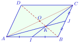
មើលដំណោះស្រាយ
ពិនិត្យត្រីកោណ \(\displaystyle ABC\) ៖
- \(\displaystyle I\) ជាចំណុចកណ្តាលនៃ \(\displaystyle AB\) នាំឱ្យ \(\displaystyle CI\) ជាមេដ្យានគូសចេញពី \(\displaystyle C\)
- \(\displaystyle J\) ជាចំណុចកណ្តាលនៃ \(\displaystyle BC\) នាំឱ្យ \(\displaystyle AJ\) ជាមេដ្យានគូសចេញពី \(\displaystyle A\)
តាង \(\displaystyle K\) ជាចំណុចប្រសព្វនៃមេដ្យានទាំងពីរ \(\displaystyle AJ\) និង \(\displaystyle CI\) នាំឱ្យ \(\displaystyle K\) ជាទីប្រជុំទម្ងន់នៃ \(\displaystyle \Delta ABC\) ។
តាមលក្ខណៈនៃទីប្រជុំទម្ងន់ មេដ្យានទីបីគូសចេញពីកំពូល \(\displaystyle B\) ត្រូវតែកាត់តាម \(\displaystyle K\) និងកាត់តាមចំណុចកណ្តាល \(\displaystyle O\) នៃជ្រុង \(\displaystyle AC\) ។
ក្នុងប្រលេឡូក្រាម \(\displaystyle ABCD\) អង្កត់ទ្រូងទាំងពីរ \(\displaystyle AC\) និង \(\displaystyle BD\) កាត់គ្នាត្រង់ចំណុចកណ្តាល \(\displaystyle O\) រួម ។ ហេតុនេះ បន្ទាត់ \(\displaystyle BO\) គឺជាបន្ទាត់ទ្រទ្រង់អង្កត់ទ្រូង \(\displaystyle BD\) ។
ដោយចំណុច \(\displaystyle K\) ឋិតនៅលើបន្ទាត់ \(\displaystyle BO\) ដូចនេះ បន្ទាត់ \(\displaystyle AJ\) និង \(\displaystyle CI\) ជួបគ្នានៅលើអង្កត់ទ្រូង \(\displaystyle BD\) នៃប្រលេឡូក្រាម ។
គូសប្រលេឡូក្រាម \(\displaystyle ABCD\) រួចដៅចំណុច \(\displaystyle E\) ឆ្លុះនៃ \(\displaystyle D\) ធៀបនឹង \(\displaystyle B\) ។ បង្ហាញថា \(\displaystyle B\) ជាទីប្រជុំទម្ងន់នៃត្រីកោណ \(\displaystyle AEC\) ។
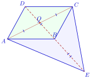
មើលដំណោះស្រាយ
តាង \(\displaystyle O\) ជាចំណុចប្រសព្វនៃអង្កត់ទ្រូង \(\displaystyle AC\) និង \(\displaystyle BD\) នៃប្រលេឡូក្រាម \(\displaystyle ABCD\) នាំឱ្យ \(\displaystyle O\) ជាចំណុចកណ្តាលនៃ \(\displaystyle AC\) និង \(\displaystyle BD\) (\(\displaystyle OB = OD\)) ។
ក្នុងត្រីកោណ \(\displaystyle AEC\) អង្កត់ \(\displaystyle EO\) ជាមេដ្យានគូសចេញពីកំពូល \(\displaystyle E\) ទៅកាន់ជ្រុង \(\displaystyle AC\) (ព្រោះ \(\displaystyle O\) ជាចំណុចកណ្តាលនៃ \(\displaystyle AC\)) ។
ដោយ \(\displaystyle E\) ជាចំណុចឆ្លុះនៃ \(\displaystyle D\) ធៀបនឹង \(\displaystyle B\) នោះ \(\displaystyle B\) ជាចំណុចកណ្តាលនៃអង្កត់ \(\displaystyle DE\) នាំឱ្យ \(\displaystyle BE = BD\) ។
ម្យ៉ាងទៀត \(\displaystyle O\) ជាចំណុចកណ្តាលនៃ \(\displaystyle BD\) នាំឱ្យ \(\displaystyle BD = 2OB\) ដូច្នេះ ៖
\[BE = 2OB\]ប្រវែងមេដ្យាន \(\displaystyle EO\) គឺ ៖
\[EO = EB + BO = 2OB + OB = 3OB\]នាំឱ្យ ៖
\[EB = \frac{2}{3}EO\]ចំណុច \(\displaystyle B\) ឋិតនៅលើមេដ្យាន \(\displaystyle EO\) ហើយនៅចម្ងាយស្មើ \(\displaystyle \frac{2}{3}\) នៃមេដ្យានពីកំពូល \(\displaystyle E\) ។
ដូចនេះ \(\displaystyle B\) ជាទីប្រជុំទម្ងន់នៃត្រីកោណ \(\displaystyle AEC\) ។
\(\displaystyle H\) ជាអរតូសង់នៃត្រីកោណ \(\displaystyle ABC\) ។ បញ្ជាក់ប្រាប់អរតូសង់នៃត្រីកោណ \(\displaystyle ABH\), \(\displaystyle CAH\) និង \(\displaystyle BCH\) ។
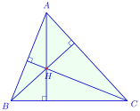
មើលដំណោះស្រាយ
ដោយ \(\displaystyle H\) ជាអរតូសង់នៃត្រីកោណ \(\displaystyle ABC\) នោះគេមានកម្ពស់កាត់កែងគ្នា ៖
\[AH \perp BC, \quad BH \perp AC, \quad CH \perp AB\]អរតូសង់នៃត្រីកោណ \(\displaystyle ABH\) ៖
- កម្ពស់គូសចេញពី \(\displaystyle A\) កែងនឹង \(\displaystyle BH\) គឺបន្ទាត់ \(\displaystyle AC\) (ព្រោះ \(\displaystyle AC \perp BH\))
- កម្ពស់គូសចេញពី \(\displaystyle B\) កែងនឹង \(\displaystyle AH\) គឺបន្ទាត់ \(\displaystyle BC\) (ព្រោះ \(\displaystyle BC \perp AH\))
- កម្ពស់ទាំងពីរនេះប្រសព្វគ្នាត្រង់ចំណុច \(\displaystyle C\) ។
ដូចនេះ អរតូសង់នៃ \(\displaystyle \Delta ABH\) គឺចំណុច \(\displaystyle C\) ។
អរតូសង់នៃត្រីកោណ \(\displaystyle CAH\) ៖
- កម្ពស់គូសចេញពី \(\displaystyle C\) កែងនឹង \(\displaystyle AH\) គឺបន្ទាត់ \(\displaystyle BC\)
- កម្ពស់គូសចេញពី \(\displaystyle A\) កែងនឹង \(\displaystyle CH\) គឺបន្ទាត់ \(\displaystyle AB\)
- កម្ពស់ទាំងពីរនេះប្រសព្វគ្នាត្រង់ចំណុច \(\displaystyle B\) ។
ដូចនេះ អរតូសង់នៃ \(\displaystyle \Delta CAH\) គឺចំណុច \(\displaystyle B\) ។
អរតូសង់នៃត្រីកោណ \(\displaystyle BCH\) ៖
- កម្ពស់គូសចេញពី \(\displaystyle B\) កែងនឹង \(\displaystyle CH\) គឺបន្ទាត់ \(\displaystyle AB\)
- កម្ពស់គូសចេញពី \(\displaystyle C\) កែងនឹង \(\displaystyle BH\) គឺបន្ទាត់ \(\displaystyle AC\)
- កម្ពស់ទាំងពីរនេះប្រសព្វគ្នាត្រង់ចំណុច \(\displaystyle A\) ។
ដូចនេះ អរតូសង់នៃ \(\displaystyle \Delta BCH\) គឺចំណុច \(\displaystyle A\) ។
ប្រាប់ប្រភេទនៃត្រីកោណ \(\displaystyle ABC\) ដែលអរតូសង់របស់វាឋិតនៅលើមេដ្យាទ័រនៃអង្កត់ \(\displaystyle BC\) ។
មើលដំណោះស្រាយ
តាង \(\displaystyle H\) ជាអរតូសង់នៃត្រីកោណ \(\displaystyle ABC\) ។
តាមនិយមន័យអរតូសង់ បន្ទាត់កាត់តាមកំពូល \(\displaystyle A\) និងកាត់តាម \(\displaystyle H\) គឺជាកម្ពស់នៃ \(\displaystyle \Delta ABC\) ដែលកែងនឹងជ្រុងឈម \(\displaystyle BC\) ត្រង់ \(\displaystyle A'\) (\(\displaystyle AH \perp BC\)) ។
តាមសម្មតិកម្ម ចំណុច \(\displaystyle H\) ឋិតនៅលើមេដ្យាទ័រនៃអង្កត់ \(\displaystyle BC\) នាំឱ្យបន្ទាត់កាត់តាម \(\displaystyle H\) ហើយកែងនឹង \(\displaystyle BC\) ត្រូវតែកាត់តាមចំណុចកណ្តាលនៃ \(\displaystyle BC\) ។
ដូច្នេះ បន្ទាត់កម្ពស់ \(\displaystyle AH\) គឺជាមេដ្យាទ័រនៃជ្រុង \(\displaystyle BC\) ផងដែរ ។
ដោយកំពូល \(\displaystyle A\) ឋិតនៅលើមេដ្យាទ័រនៃ \(\displaystyle BC\) នោះចម្ងាយពី \(\displaystyle A\) ទៅកំពូលទាំងពីរស្មើគ្នា ៖
\[AB = AC\]ដូចនេះ ត្រីកោណ \(\displaystyle ABC\) ជា ត្រីកោណសមបាតកំពូល \(\displaystyle A\) (ឬជាត្រីកោណសម័ង្ស បើអរតូសង់ឋិតលើមេដ្យាទ័រនៃជ្រុងទាំងបី) ។
\(\displaystyle ABC\) ជាត្រីកោណកែងត្រង់ \(\displaystyle A\) ។ រង្វង់ចារឹកក្នុងត្រីកោណនេះប៉ះទៅនឹងជ្រុងត្រីកោណនេះត្រង់ចំណុច \(\displaystyle P\), \(\displaystyle Q\) និង \(\displaystyle R\) (\(\displaystyle I\) ជាផ្ចិតរបស់រង្វង់នេះ) ។ ប្រាប់ប្រភេទនៃចតុកោណ \(\displaystyle APIQ\) ។
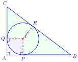
មើលដំណោះស្រាយ
តាង \(\displaystyle P\) និង \(\displaystyle Q\) ជាចំណុចប៉ះនៃរង្វង់ចារឹកក្នុងនៅលើជ្រុង \(\displaystyle AB\) និង \(\displaystyle AC\) រៀងគ្នា ។
តាមលក្ខណៈនៃបន្ទាត់ប៉ះរង្វង់ កាំដែលគូសទៅចំណុចប៉ះកែងនឹងបន្ទាត់ប៉ះ ៖
- \(\displaystyle IP \perp AB\) ត្រង់ \(\displaystyle P \implies \angle IPA = 90^\circ\)
- \(\displaystyle IQ \perp AC\) ត្រង់ \(\displaystyle Q \implies \angle IQA = 90^\circ\)
ដោយត្រីកោណ \(\displaystyle ABC\) កែងត្រង់ \(\displaystyle A\) នាំឱ្យ \(\displaystyle \angle PAQ = 90^\circ\) ។
ចតុកោណ \(\displaystyle APIQ\) មានមុំកែងបី \(\displaystyle \angle A = \angle P = \angle Q = 90^\circ\) នាំឱ្យវាជាចតុកោណកែង (និងមុំទីបួន \(\displaystyle \angle PIQ = 90^\circ\)) ។
ម្យ៉ាងទៀត ជ្រុងជាប់គ្នាទាំងពីរ \(\displaystyle IP\) និង \(\displaystyle IQ\) ជាកាំនៃរង្វង់ចារឹកក្នុងតែមួយ ៖
\[IP = IQ = r\]ចតុកោណកែងដែលមានជ្រុងជាប់គ្នាពីរប៉ុនគ្នា ជាការេ ។
ដូចនេះ ចតុកោណ \(\displaystyle APIQ\) ជា ការេ (Square) ។
បំពេញតារាងខាងក្រោមដោយប្រើរូបដែលឱ្យដូចរូបខាងស្តាំ ។
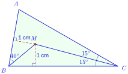
មើលដំណោះស្រាយ
តាមរូប ចំណុច \(\displaystyle M\) នៅចម្ងាយ \(\displaystyle 1\) cm ពីបន្ទាត់ \(\displaystyle AB\) និងពីបន្ទាត់ \(\displaystyle BC\) ដូចគ្នា ហើយ \(\displaystyle CM\) ជាកន្លះបន្ទាត់ពុះនៃ \(\displaystyle \angle C\) (\(\displaystyle \angle MCB = \angle MCA = 15^\circ\)) ។ ដោយចំណុចដែលនៅស្មើចម្ងាយពីបន្ទាត់ពីរ ស្ថិតនៅលើកន្លះបន្ទាត់ពុះមុំ នោះ \(\displaystyle BM\) ជាកន្លះបន្ទាត់ពុះនៃ \(\displaystyle \angle B\) ។ ដូច្នេះ \(\displaystyle M\) ជាចំណុចប្រសព្វនៃកន្លះបន្ទាត់ពុះមុំ \(\displaystyle B\) និង \(\displaystyle C\) គឺជាផ្ចិតរង្វង់ចារឹកក្នុង \(\displaystyle \Delta ABC\) ហើយ \(\displaystyle AM\) ក៏ជាកន្លះបន្ទាត់ពុះនៃ \(\displaystyle \angle A\) ដែរ ។
គណនារង្វាស់មុំនីមួយៗ ៖
\(\displaystyle \angle MBC\) ៖ \(\displaystyle BM\) ជាកន្លះបន្ទាត់ពុះនៃ \(\displaystyle \angle B\) ហើយ \(\displaystyle \angle MBA = 40^\circ\) នាំឱ្យ
\[\angle MBC = \angle MBA = 40^\circ \quad \text{និង} \quad \angle ABC = 2 \times 40^\circ = 80^\circ\]\(\displaystyle \angle BMC\) ៖ ក្នុងត្រីកោណ \(\displaystyle MBC\) ផលបូកមុំក្នុងស្មើ \(\displaystyle 180^\circ\) ៖
\[\angle BMC = 180^\circ - (\angle MBC + \angle MCB) = 180^\circ - (40^\circ + 15^\circ) = 125^\circ\]\(\displaystyle \angle CAM\) ៖ \(\displaystyle \angle ACB = 2 \times 15^\circ = 30^\circ\) ។ ក្នុងត្រីកោណ \(\displaystyle ABC\) ៖
\[\angle BAC = 180^\circ - (80^\circ + 30^\circ) = 70^\circ\]ដោយ \(\displaystyle AM\) ជាកន្លះបន្ទាត់ពុះនៃ \(\displaystyle \angle A\) គេបាន
\[\angle CAM = \frac{70^\circ}{2} = 35^\circ\]\(\displaystyle \angle AMC\) ៖ ក្នុងត្រីកោណ \(\displaystyle AMC\) ៖
\[\angle AMC = 180^\circ - (\angle CAM + \angle MCA) = 180^\circ - (35^\circ + 15^\circ) = 130^\circ\]
តារាងដែលបំពេញរួច ៖
មុំ \(\displaystyle \angle MBC\) \(\displaystyle \angle BMC\) \(\displaystyle \angle CAM\) \(\displaystyle \angle AMC\) គិតជាដឺក្រេ \(\displaystyle 40^\circ\) \(\displaystyle 125^\circ\) \(\displaystyle 35^\circ\) \(\displaystyle 130^\circ\) \(\displaystyle ABCD\) ជាប្រលេឡូក្រាម ។ \(\displaystyle I\) ជាចំណុចកណ្តាលនៃអង្កត់ \(\displaystyle AB\) និង \(\displaystyle J\) ជាចំណុចកណ្តាលនៃអង្កត់ \(\displaystyle BC\) ។ គេយក \(\displaystyle P\) និង \(\displaystyle Q\) ជាចំណុចប្រសព្វនៃអង្កត់ទ្រូង \(\displaystyle AC\) ជាមួយនឹងបន្ទាត់ \(\displaystyle DI\) និង \(\displaystyle DJ\) ។ បង្ហាញថា \(\displaystyle AP = PQ = QC = \frac{AC}{3}\) ។
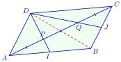
មើលដំណោះស្រាយ
បង្ហាញថា \(\displaystyle AP = PQ = QC = \frac{AC}{3}\) ៖
តាង \(\displaystyle O\) ជាចំណុចប្រសព្វនៃអង្កត់ទ្រូង \(\displaystyle AC\) និង \(\displaystyle BD\) នាំឱ្យ \(\displaystyle O\) ជាចំណុចកណ្តាលនៃ \(\displaystyle AC\) និង \(\displaystyle BD\) ៖
\[AO = OC = \frac{AC}{2} \quad \text{និង} \quad BO = OD\]ពិនិត្យត្រីកោណ \(\displaystyle ABD\) ៖
- \(\displaystyle AO\) ជាមេដ្យាន (ព្រោះ \(\displaystyle O\) ជាចំណុចកណ្តាលនៃ \(\displaystyle BD\))
- \(\displaystyle DI\) ជាមេដ្យាន (ព្រោះ \(\displaystyle I\) ជាចំណុចកណ្តាលនៃ \(\displaystyle AB\))
- \(\displaystyle P\) ជាចំណុចប្រសព្វនៃមេដ្យាន \(\displaystyle AO\) និង \(\displaystyle DI\) នាំឱ្យ \(\displaystyle P\) ជា ទីប្រជុំទម្ងន់ នៃ \(\displaystyle \Delta ABD\) ។
តាមលក្ខណៈទីប្រជុំទម្ងន់ គេបាន ៖
\[AP = \frac{2}{3}AO = \frac{2}{3}\left(\frac{AC}{2}\right) = \frac{AC}{3}\]\[PO = \frac{1}{3}AO = \frac{1}{3}\left(\frac{AC}{2}\right) = \frac{AC}{6}\]ពិនិត្យត្រីកោណ \(\displaystyle CBD\) ៖
- \(\displaystyle CO\) ជាមេដ្យាន (ព្រោះ \(\displaystyle O\) ជាចំណុចកណ្តាលនៃ \(\displaystyle BD\))
- \(\displaystyle DJ\) ជាមេដ្យាន (ព្រោះ \(\displaystyle J\) ជាចំណុចកណ្តាលនៃ \(\displaystyle BC\))
- \(\displaystyle Q\) ជាចំណុចប្រសព្វនៃមេដ្យាន \(\displaystyle CO\) និង \(\displaystyle DJ\) នាំឱ្យ \(\displaystyle Q\) ជា ទីប្រជុំទម្ងន់ នៃ \(\displaystyle \Delta CBD\) ។
តាមលក្ខណៈទីប្រជុំទម្ងន់ គេបាន ៖
\[QC = \frac{2}{3}CO = \frac{2}{3}\left(\frac{AC}{2}\right) = \frac{AC}{3}\]\[OQ = \frac{1}{3}CO = \frac{1}{3}\left(\frac{AC}{2}\right) = \frac{AC}{6}\]
គណនាប្រវែងអង្កត់ \(\displaystyle PQ\) ៖
\[PQ = PO + OQ = \frac{AC}{6} + \frac{AC}{6} = \frac{2AC}{6} = \frac{AC}{3}\]ដូចនេះ គេបាន ៖
\[AP = PQ = QC = \frac{AC}{3} \text{ ។}\]ក្នុងប្រលេឡូក្រាម \(\displaystyle ABCD\) បន្ទាត់ដែលកែងនឹងបន្ទាត់ \(\displaystyle BC\) កាត់តាម \(\displaystyle A\) និងបន្ទាត់កែងនឹងបន្ទាត់ \(\displaystyle AC\) កាត់តាម \(\displaystyle B\) ប្រសព្វគ្នាត្រង់ \(\displaystyle E\) ។ ប្រាប់ប្រភេទនៃត្រីកោណ \(\displaystyle CDE\) ។
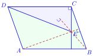
មើលដំណោះស្រាយ
ប្រាប់ប្រភេទនៃត្រីកោណ \(\displaystyle CDE\) ៖
ពិនិត្យត្រីកោណ \(\displaystyle ABC\) ៖
- បន្ទាត់កាត់តាម \(\displaystyle A\) កែងនឹង \(\displaystyle BC\) ជាកម្ពស់គូសចេញពីកំពូល \(\displaystyle A\) ចំពោះជ្រុង \(\displaystyle BC\)
- បន្ទាត់កាត់តាម \(\displaystyle B\) កែងនឹង \(\displaystyle AC\) ជាកម្ពស់គូសចេញពីកំពូល \(\displaystyle B\) ចំពោះជ្រុង \(\displaystyle AC\)
- បន្ទាត់ទាំងពីរកាត់គ្នាត្រង់ចំណុច \(\displaystyle E\) នាំឱ្យ \(\displaystyle E\) ជា អរតូសង់ នៃត្រីកោណ \(\displaystyle ABC\) ។
តាមលក្ខណៈនៃអរតូសង់ បន្ទាត់គូសចេញពីកំពូលទីបី \(\displaystyle C\) កាត់តាម \(\displaystyle E\) ត្រូវតែកែងនឹងជ្រុងឈម \(\displaystyle AB\) ៖
\[CE \perp AB\]ក្នុងប្រលេឡូក្រាម \(\displaystyle ABCD\) ជ្រុងឈមស្របគ្នា \(\displaystyle AB \parallel CD\) ។
ដោយ \(\displaystyle CE \perp AB\) ហើយ \(\displaystyle AB \parallel CD\) នាំឱ្យ ៖
\[CE \perp CD \implies \angle DCE = 90^\circ\]ត្រីកោណ \(\displaystyle CDE\) មានមុំមួយជាមុំកែង (\(\displaystyle \angle DCE = 90^\circ\)) ។
ដូចនេះ ត្រីកោណ \(\displaystyle CDE\) ជា ត្រីកោណកែងត្រង់កំពូល \(\displaystyle C\) ។
\(\displaystyle ABC\) ជាត្រីកោណកែងត្រង់ \(\displaystyle A\) និង \(\displaystyle AD\) ជាជើងកម្ពស់គូសចេញពី \(\displaystyle A\) ។ \(\displaystyle I\) ជាចំណុចកណ្តាលនៃអង្កត់ \(\displaystyle BD\) និង \(\displaystyle J\) ជាចំណុចកណ្តាលនៃអង្កត់ \(\displaystyle AD\) ។ ស្រាយបញ្ជាក់ថា បន្ទាត់ \(\displaystyle AI\) និងបន្ទាត់ \(\displaystyle CJ\) ជាបន្ទាត់កែងគ្នា ។
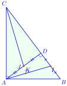
មើលដំណោះស្រាយ
ស្រាយបញ្ជាក់ថាបន្ទាត់ \(\displaystyle AI\) និងបន្ទាត់ \(\displaystyle CJ\) ជាបន្ទាត់កែងគ្នា (\(\displaystyle AI \perp CJ\)) ៖
ពិនិត្យត្រីកោណ \(\displaystyle ABD\) ៖
- \(\displaystyle I\) ជាចំណុចកណ្តាលនៃ \(\displaystyle BD\)
- \(\displaystyle J\) ជាចំណុចកណ្តាលនៃ \(\displaystyle AD\)
តាមទ្រឹស្ដីបទចំណុចកណ្ដាលនៃត្រីកោណ អង្កត់ \(\displaystyle IJ\) ស្របនឹងបាត \(\displaystyle AB\) ៖
\[IJ \parallel AB\]ដោយត្រីកោណ \(\displaystyle ABC\) កែងត្រង់កំពូល \(\displaystyle A\) នោះ \(\displaystyle AB \perp AC\) ។
ដោយ \(\displaystyle IJ \parallel AB\) ហើយ \(\displaystyle AB \perp AC\) នាំឱ្យ ៖
\[IJ \perp AC\]ឥឡូវពិនិត្យត្រីកោណ \(\displaystyle AIC\) ៖
- អង្កត់ \(\displaystyle AD \perp BC\) នាំឱ្យ \(\displaystyle AD\) ជាកម្ពស់គូសចេញពីកំពូល \(\displaystyle A\) ទៅលើជ្រុង \(\displaystyle IC\)
- អង្កត់ \(\displaystyle IJ \perp AC\) នាំឱ្យ \(\displaystyle IJ\) ជាកម្ពស់គូសចេញពីកំពូល \(\displaystyle I\) ទៅលើជ្រុង \(\displaystyle AC\)
- កម្ពស់ទាំងពីរ \(\displaystyle AD\) និង \(\displaystyle IJ\) កាត់គ្នាត្រង់ចំណុច \(\displaystyle J\) ។
ដូច្នេះ ចំណុច \(\displaystyle J\) គឺជា អរតូសង់ នៃត្រីកោណ \(\displaystyle AIC\) ។
តាមលក្ខណៈនៃអរតូសង់ បន្ទាត់គូសចេញពីកំពូលទីបី \(\displaystyle C\) កាត់តាម \(\displaystyle J\) ត្រូវតែកែងនឹងជ្រុងឈម \(\displaystyle AI\) ៖
\[CJ \perp AI\]ដូចនេះ បន្ទាត់ \(\displaystyle AI\) និងបន្ទាត់ \(\displaystyle CJ\) ជាបន្ទាត់កែងគ្នា ។
គេឱ្យ \(\displaystyle ABCD\) ជាប្រលេឡូក្រាមមួយ ។ គេកំណត់
- \(\displaystyle O\) ជាចំណុចប្រសព្វនៃអង្កត់ទ្រូងប្រលេឡូក្រាម
- \(\displaystyle H\) ជាអរតូសង់នៃត្រីកោណ \(\displaystyle ABC\)
- \(\displaystyle H'\) ជាអរតូសង់នៃត្រីកោណ \(\displaystyle ACD\) ។
បង្ហាញថា \(\displaystyle O\) ជាចំណុចកណ្តាលនៃអង្កត់ \(\displaystyle HH'\) ។
មើលដំណោះស្រាយ
បង្ហាញថា \(\displaystyle O\) ជាចំណុចកណ្តាលនៃអង្កត់ \(\displaystyle HH'\) ៖
ក្នុងប្រលេឡូក្រាម \(\displaystyle ABCD\) អង្កត់ទ្រូង \(\displaystyle AC\) និង \(\displaystyle BD\) កាត់គ្នាត្រង់ចំណុចកណ្តាល \(\displaystyle O\) រួម ។ ដូច្នេះ ចំណុច \(\displaystyle O\) គឺជាផ្ចិតឆ្លុះនៃប្រលេឡូក្រាម \(\displaystyle ABCD\) ។
ពិនិត្យបំប្លែងឆ្លុះធៀបនឹងផ្ចិត \(\displaystyle O\) ៖
- ចំណុច \(\displaystyle A\) ឆ្លុះទៅចំណុច \(\displaystyle C\)
- ចំណុច \(\displaystyle B\) ឆ្លុះទៅចំណុច \(\displaystyle D\)
- ចំណុច \(\displaystyle C\) ឆ្លុះទៅចំណុច \(\displaystyle A\)
នាំឱ្យរូបភាពឆ្លុះនៃត្រីកោណ \(\displaystyle ABC\) ធៀបនឹងផ្ចិត \(\displaystyle O\) គឺត្រីកោណ \(\displaystyle CDA\) (ឬ \(\displaystyle \Delta ACD\)) ។
ដោយ \(\displaystyle H\) ជាអរតូសង់នៃត្រីកោណ \(\displaystyle ABC\) នោះរូបភាពឆ្លុះរបស់វាធៀបនឹង \(\displaystyle O\) ត្រូវតែជាអរតូសង់នៃត្រីកោណ \(\displaystyle ACD\) ដែលជាចំណុច \(\displaystyle H'\) ។
តាមនិយមន័យនៃផ្ចិតឆ្លុះ ចំណុច \(\displaystyle O\) គឺជាចំណុចកណ្តាលនៃអង្កត់ដែលភ្ជាប់ចំណុចមួយនិងរូបភាពឆ្លុះរបស់វា ។
ដូចនេះ \(\displaystyle O\) ជាចំណុចកណ្តាលនៃអង្កត់ \(\displaystyle HH'\) ។
ក្នុងត្រីកោណ \(\displaystyle ABC\) កន្លះបន្ទាត់ពុះនៃមុំ \(\displaystyle B\) និងមុំ \(\displaystyle C\) ប្រសព្វគ្នាត្រង់ \(\displaystyle I\) ។ ក្នុងត្រីកោណ \(\displaystyle ADE\) កន្លះបន្ទាត់ពុះនៃមុំ \(\displaystyle D\) និងមុំ \(\displaystyle E\) ប្រសព្វគ្នាត្រង់ \(\displaystyle J\) ។ បង្ហាញថាចំណុច \(\displaystyle A\), \(\displaystyle I\) និង \(\displaystyle J\) រត់ត្រង់ជួរគ្នា ។
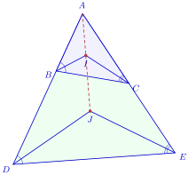
មើលដំណោះស្រាយ
បង្ហាញថាចំណុច \(\displaystyle A\), \(\displaystyle I\) និង \(\displaystyle J\) រត់ត្រង់ជួរគ្នា ៖
- ក្នុងត្រីកោណ \(\displaystyle ABC\) កន្លះបន្ទាត់ពុះនៃមុំ \(\displaystyle B\) និងមុំ \(\displaystyle C\) ប្រសព្វគ្នាត្រង់ \(\displaystyle I\) នាំឱ្យ \(\displaystyle I\) ជាផ្ចិតរង្វង់ចារឹកក្នុងនៃ \(\displaystyle \Delta ABC\) ។ តាមទ្រឹស្ដីបទកន្លះបន្ទាត់ពុះមុំក្នុងត្រីកោណ កន្លះបន្ទាត់ពុះចេញពីកំពូលទីបី \(\displaystyle A\) ក៏ត្រូវតែកាត់តាម \(\displaystyle I\) ដែរ នោះកន្លះបន្ទាត់ \(\displaystyle AI\) ជាកន្លះបន្ទាត់ពុះនៃមុំក្នុង \(\displaystyle \angle BAC\) ។
- ក្នុងត្រីកោណ \(\displaystyle ADE\) កន្លះបន្ទាត់ពុះនៃមុំ \(\displaystyle D\) និងមុំ \(\displaystyle E\) ប្រសព្វគ្នាត្រង់ \(\displaystyle J\) នាំឱ្យ \(\displaystyle J\) ជាផ្ចិតរង្វង់ចារឹកក្នុងនៃ \(\displaystyle \Delta ADE\) ។ តាមទ្រឹស្ដីបទកន្លះបន្ទាត់ពុះមុំក្នុងត្រីកោណ កន្លះបន្ទាត់ \(\displaystyle AJ\) គឺជាកន្លះបន្ទាត់ពុះនៃមុំក្នុង \(\displaystyle \angle DAE\) ។
- ដោយត្រីកោណទាំងពីរមានកំពូល \(\displaystyle A\) ជារួម ហើយជ្រុង \(\displaystyle AD\) នៅលើកន្លះបន្ទាត់ \(\displaystyle AB\) និង \(\displaystyle AE\) នៅលើកន្លះបន្ទាត់ \(\displaystyle AC\) នោះមុំ \(\displaystyle \angle DAE\) និងមុំ \(\displaystyle \angle BAC\) ជាមុំតែមួយ (\(\displaystyle \angle DAE \equiv \angle BAC\)) ។
មុំមួយមានកន្លះបន្ទាត់ពុះតែមួយគត់ ដូច្នេះកន្លះបន្ទាត់ \(\displaystyle AI\) និងកន្លះបន្ទាត់ \(\displaystyle AJ\) ត្រូវតែត្រួតស៊ីគ្នាតាមកន្លះបន្ទាត់តែមួយ ។
ដូចនេះ ចំណុច \(\displaystyle A\), \(\displaystyle I\) និង \(\displaystyle J\) ឋិតនៅលើបន្ទាត់តែមួយ (រត់ត្រង់ជួរគ្នា) ។
\(\displaystyle ABC\) ជាត្រីកោណមួយ ។ \(\displaystyle d\), \(\displaystyle d'\) និង \(\displaystyle d''\) ជាបន្ទាត់បី ដែលកាត់រៀងគ្នាតាម \(\displaystyle A\), \(\displaystyle B\), \(\displaystyle C\) ហើយស្របទៅនឹងជ្រុងឈមនីមួយៗនៃកំពូល ។ \(\displaystyle d\) និង \(\displaystyle d'\) កាត់គ្នាត្រង់ \(\displaystyle C'\), \(\displaystyle d\) និង \(\displaystyle d''\) កាត់គ្នាត្រង់ \(\displaystyle B'\), \(\displaystyle d'\) និង \(\displaystyle d''\) កាត់គ្នាត្រង់ \(\displaystyle A'\) ។ \(\displaystyle H\) ជាជើងកម្ពស់នៃត្រីកោណ \(\displaystyle ABC\) គូសចេញពី \(\displaystyle A\) ។ បង្ហាញថាបន្ទាត់ \(\displaystyle AH\) ជាមេដ្យាទ័រនៃ \(\displaystyle B'C'\) ។
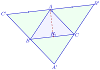
▶ មើលរូបមានចលនា៖ ត្រីកោណធំ A′B′C′
មើលដំណោះស្រាយ
បង្ហាញថាបន្ទាត់ \(\displaystyle AH\) ជាមេដ្យាទ័រនៃ \(\displaystyle B'C'\) ៖
- ពិនិត្យចតុកោណ \(\displaystyle ACBC'\) ៖ មាន \(\displaystyle AC' \parallel BC\) (\(\displaystyle d \parallel BC\)) និង \(\displaystyle BC' \parallel AC\) (\(\displaystyle d' \parallel AC\)) នាំឱ្យចតុកោណ \(\displaystyle ACBC'\) ជាប្រលេឡូក្រាម \(\displaystyle \implies AC' = BC\) ។
- ពិនិត្យចតុកោណ \(\displaystyle ABCB'\) ៖ មាន \(\displaystyle AB' \parallel BC\) (\(\displaystyle d \parallel BC\)) និង \(\displaystyle CB' \parallel AB\) (\(\displaystyle d'' \parallel AB\)) នាំឱ្យចតុកោណ \(\displaystyle ABCB'\) ជាប្រលេឡូក្រាម \(\displaystyle \implies AB' = BC\) ។
គេទាញបាន ៖
\[AC' = AB' = BC\]ដូច្នេះ ចំណុច \(\displaystyle A\) ជាចំណុចកណ្តាលនៃអង្កត់ \(\displaystyle B'C'\) ។
ម្យ៉ាងទៀត \(\displaystyle H\) ជាជើងកម្ពស់នៃ \(\displaystyle \Delta ABC\) គូសចេញពី \(\displaystyle A\) នោះ \(\displaystyle AH \perp BC\) ។
ដោយបន្ទាត់ \(\displaystyle B'C'\) (បន្ទាត់ \(\displaystyle d\)) ស្របនឹង \(\displaystyle BC\) ហើយ \(\displaystyle AH \perp BC\) នាំឱ្យ ៖
\[AH \perp B'C' \text{ ត្រង់ } A\]បន្ទាត់ \(\displaystyle AH\) កែងនឹងអង្កត់ \(\displaystyle B'C'\) ត្រង់ចំណុចកណ្តាល \(\displaystyle A\) នៃ \(\displaystyle B'C'\) ។
ដូចនេះ បន្ទាត់ \(\displaystyle AH\) ជាមេដ្យាទ័រនៃ \(\displaystyle B'C'\) ។
គេឱ្យ \(\displaystyle ABC\) ជាត្រីកោណកែងត្រង់ \(\displaystyle A\) និង \(\displaystyle I\) ជាផ្ចិតរង្វង់ចារឹកក្នុងត្រីកោណនេះ ។ គណនាដឺក្រេនៃ \(\displaystyle \angle BIC\) ។
មើលដំណោះស្រាយ
គណនារង្វាស់មុំ \(\displaystyle \angle BIC\) គិតជាដឺក្រេ ៖
ក្នុងត្រីកោណកែង \(\displaystyle ABC\) កែងត្រង់ \(\displaystyle A\) គេមាន \(\displaystyle \angle A = 90^\circ\) នាំឱ្យផលបូកមុំស្រួចទាំងពីរគឺ ៖
\[\angle B + \angle C = 180^\circ - 90^\circ = 90^\circ\]ដោយ \(\displaystyle I\) ជាផ្ចិតរង្វង់ចារឹកក្នុងត្រីកោណ \(\displaystyle ABC\) នោះ \(\displaystyle BI\) និង \(\displaystyle CI\) ជាកន្លះបន្ទាត់ពុះមុំ នាំឱ្យ ៖
\[\angle IBC = \frac{\angle B}{2} \quad \text{និង} \quad \angle ICB = \frac{\angle C}{2}\]ក្នុងត្រីកោណ \(\displaystyle IBC\) ផលបូកមុំក្នុងស្មើ \(\displaystyle 180^\circ\) ៖
\[\angle BIC = 180^\circ - (\angle IBC + \angle ICB)\]\[\angle BIC = 180^\circ - \frac{\angle B + \angle C}{2}\]ជំនួស \(\displaystyle \angle B + \angle C = 90^\circ\) គេបាន ៖
\[\angle BIC = 180^\circ - \frac{90^\circ}{2} = 180^\circ - 45^\circ = 135^\circ\]ដូចនេះ រង្វាស់នៃមុំ \(\displaystyle \angle BIC\) គឺ \(\displaystyle 135^\circ\) ។
ខ្លឹមសារ៖ សៀវភៅពុម្ពគណិតវិទ្យាថ្នាក់ទី៨ របស់ក្រសួងអប់រំ យុវជន និងកីឡា · វាយអត្ថបទ គូររូបភាពឡើងវិញ និងរៀបចំលើអនឡាញដោយលោកគ្រូ សាន សុខលី សម្រាប់ការសិក្សាដោយឥតគិតថ្លៃ និងមិនរកប្រាក់ចំណេញ។ មិនមែនជាការបោះពុម្ពផ្លូវការរបស់ក្រសួងទេ។